Menü: Datei
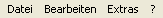
Menüs
JAuswertung bietet vier Menüs. Das Menü "Datei" befasst sich mit allen Informationen und Vorgängen zum Laden und Speichern von Dateien. Das Menü "Werkzeuge" enthält die Funktionen, die Sie bei der Verwaltung eines Wettkampfes benötigen. Das Menü Extras enthält weitere Funktionen, die nicht direkt mit der Auswertung von Wettkämpfen zu tun haben. Das Menü "?" enthält weitere Informationen über JAuswertung.
Menü: Datei

Neuen Wettkampf erstellen
Über den Menüpunkt "Neu" können Sie einen neuen Wettkampf erstellen. Es öffnet sich ein Fenster, wie es in Abbildung "Neuen Wettkampf erstellen" dargestellt ist. Wählen Sie einfach die Art von Wettkampf, die Sie durchführen möchten. Sie haben dabei die Wahl zwischen Einzel- und Mannschaftswettkämpfen. Benutzerdefinierte Wettkämpfe können ebenfalls erstellt werden, dazu können über die Knöpfe "Benutzerdefiniert" mit dem Regelwerkseditor erstellte Dateien geladen werden. Über die Menüpunkte "Öffnen", "Speichern" und "Speichern unter ..." stehen die üblichen Funktionen zur Verfügung.
Sie können verschiedene Daten importieren bzw. exportieren. Ein Assistent begleitet den Vorgang und bietet die zur Verfügung stehenden Möglichkeiten an. Importiert werden können dabei Meldedaten, Mannschaftsmitglieder, Kampfrichter und HLW-Punkte aus Excel- und CSV-Dateien. Exportiert werden können Meldedaten, Lauflisten, HLW-Listen, Kampfrichter, Startkarten, Mannschaftsmitglieder, HLW-Punkte und Ergebnisse in mindestens eins der Formate HMTL, CSV, XML, Excel oder PDF.
Hinweis: Sie können auch alle Informationen, die Sie aus JAuswertung drucken können, als PDF-Datei speichern. Nutzten Sie dazu im Druckbereich die Vorschaufunktion. Während die Vorschau angezeigt wird, steht dort auch ein Knopf "Speichern als PDF" zur Verfügung.

Daten
Details zum Import
Beim Import von Tabellen in JAuswertung müssen einige Bedingungen erfüllt sein. Verwenden Sie zum Import von Meldungen am besten die offiziellen Vorlagen, die Sie auf www.dennismueller.de finden.
Was wird importiert? Enthält eine Tabelle mehr als ein Tabellenblatt, so werden die Daten aller Blätter importiert. Tabellenblätter, die nicht den Ansprüchen genügen werden ignoriert.
Wie kann ich Probleme beim Import vermeiden? Tabellen sollten keine verbundenen Zellen und keine Formeln enthalten. Die erste Zeile einer Tabelle darf nicht leer sein.
Wie muss eine importierbare Tabelle aufgebaut sein? Die erste Zeile der Tabelle wird als Überschrift interpretiert. Dabei werden die folgenden Texte erkannt "S#" und "Startnummer" (für Startnummer), "Name" (bei Einzelwettkämpfen "Vorname" und "Nachname"), "Gliederung", "Altersklasse", "Geschlecht", "Meldepunkte" und "Gemeldete Punkte", "Außer Konkurrenz". Es wird erwartet, dass jede Zeile in der Tabelle genau einem Teilnehmer entspricht. Dabei wird davon ausgegangen, dass z.B. in der Spalte mit dem Titel "Name" die Namen der Mannschaften aufgeführt sind. Die Tabelle darf beliebig viele Spalten enthalten; Spalten deren Titel JAuswertung unbekannt ist, werden einfach ignoriert. Beachten Sie aber, dass die Felder "Name" (bzw. "Vorname" und "Nachname"), "Gliederung", "Altersklasse" und "Geschlecht" Pflichtfelder sind. Fehlt eines dieser Felder, kann JAuswertung die Tabelle nicht importieren.
Hinweis: Es werden nur Excel-Dateien ab der Versionen 97 unterstützt. Dateien älterer Versionen müssen zuerst in einem neueren Format gespeichert werden.
Hinweis: Beachten Sie bitte ebenfalls, dass nach dem Regelwerk in der offenen Altersklasse eine Wahlmöglichkeit bei den Disziplinen besteht. In diesem Fall ist auch die Festlegung der Disziplinen beim Import Pflicht. Wie die Disziplinen festgelegt werden können, ist im nächsten Abschnitt beschrieben.
Welche zusätzlichen Informationen können importiert werden? Darüber hinaus können für die jeweiligen Disziplinen Zeiten gemeldet werden, die bei der Lauflistenerstellung berücksichtigt werden können. Dazu müssen Sie nur für jede Disziplin eine Spalte anlegen, deren Titel der Name der Disziplin ist. Dort können Sie dann die Zeit im Formt "m:ss,00" (also Minuten:Sekunden,hundertstel) eintragen. Nach dem Regelwerk von 2007 darf die Offene Altersklasse ihre Disziplinen wählen. Diese Informationen können ebenfalls importiert werden. Ist in einer Spalte einer Disziplin keine Meldezeit angegeben, so wird der Teilnehmer hier nicht gemeldet. Können Sie keine Zeit angeben genügt ein "+" zur Meldung des Schwimmers.
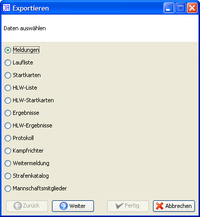
Daten
Automatisch speichern
Die Option "Automatisch speichern" speichert die aktuelle Datei alle 5 Minuten. Dabei wird der aktuelle Name der Datei um "-autosave" erweitert. Heißt ihr Wettkampf "BezMei06.wk" (".wk" ist die Endung, die von JAuswertung für Wettkämpfe benutzt wird), wird alle 5 Minuten eine Datei unter dem Namen "BezMei06-autosave.wk" gespeichert. Wurde eine Datei neu erstellt und noch nicht gespeichert, ist automatisches Speichern nicht möglich!
Das Drucken ist in JAuswertung über eine der linken Knopfleisten verfügbar. Dies ist notwendigt, da JAuswertung wesentlich mehr Druckmöglichkeiten bietet als die meisten anderen Programme. Da aber ein Menüpunkt "Drucken" an dieser Stelle erwartet wird, ist dieser hier eingefügt, und wechselt auf die entsprechende Druckansicht.
Über diesen Menüpunkt können verschiedene Angaben zum Wettkampf wie z.B. Name, Ort und Datum eingetragen werden, die für ein Protokoll benötigt werden. Einige Angaben wie z.B. der Name des Wettkampfs werden auch im Titel der Ergebnisse aufgeführt. Diese Angaben werden für das Protokoll benötigt.
Die Eingaben der Registerkarten "Wettkampf" und "Veranstaltungsort" enthalten strukturierte Informationen zum Wettkampf. Darüber hinaus werden die Felder "Name", "Ort" und "Datum" auf alle Seiten gedruckt. Die Registerkarte "Informationsseite" enthält ein Feld zur freien Texteingabe. Diese Informationen können über "Informationsseite" gedruckt werden. Für das Deckblatt des Protokolls können Sie über die Registerkarte "Logo" ein Veranstaltungslogo auswählen.

Wettkampf

Veranstaltungsort
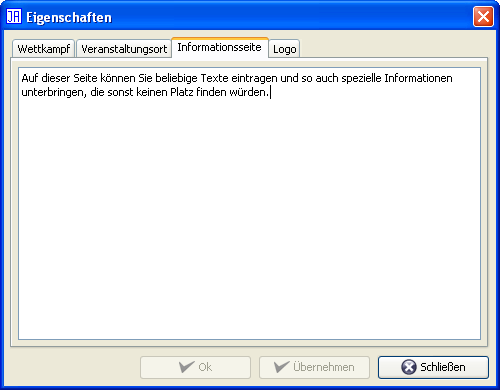
Infoseite

Logo
In der Liste der zuletzt genutzten Dateien, werden die vier letzten geöffneten bzw. gespeicherten Dateien angezeigt. Durch einen Mausklick werden diese direkt geladen.
Über diesen Menüpunkt wir JAuswertung beendet. Dies kann je nach Betriebssystem auch über das "X" in der rechten oberen Ecke des Hauptfensters geschehen. Wurden seit dem letzten Speichern Daten geändert, erfolgt eine Sicherheitsabfrage.
Das Menü "Bearbeiten" enthält die Funktionen, die Sie bei der Verwaltung ihres Wettkampfs unterstützen. Dazu gehört das Erzeugen und Verwalten von Lauf- und HLW-Listen, der Einsatz von Kampfrichtern, die Änderung des Regelwerks, die Strafenliste, fehlende Eingaben und die Kampfrichterverwaltung.
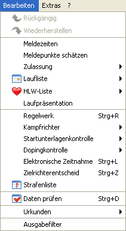
Menü: Bearbeiten
Über den Punkt "Rückgängig" können Sie jeweils die letzte Änderung zurücknehmen. Durch mehrfaches Auswählen dieses Punkts können Sie auch mehrere Schritte zurückgehen. Sollten Sie einmal einen Schritt zu weit zurück gegangen sein, können Sie diesen Schritt über den Menüpunkt "Wiederholen" wieder herstellen. Es ist auch möglich mehrere Schritte wiederherzustellen.
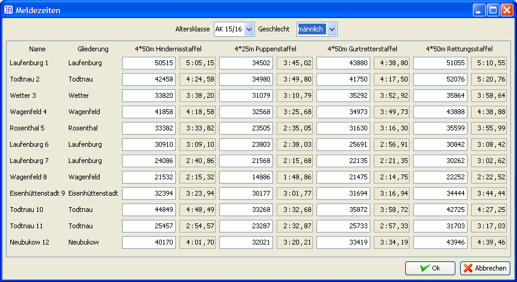
Meldezeiten
Meldezeiten werden zur gerechteren Einteilung der Läufe benötigt. Wenn Sie also eine Laufliste mit der Option "Nach Meldezeiten sortieren" erstellen wollen, sollten Sie zuerst hier die entsprechenden Meldezeiten eingeben.
Im oberen Bereich des Fensters können Sie die Altersklasse und das Geschlecht für die Eingabe wählen. Im Hauptbereich werden dann alle Schwimmer dieser Auswahl mit den Meldezeiten jeder Disziplin angezeigt. Sind für Schwimmer einzelne Diszplinen deaktiviert, so nimmt der Schwimmer an diesen Disziplinen nicht teil.
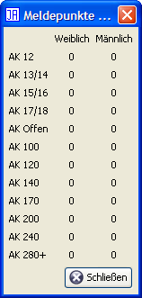
Meldepunkte schätzen
Über diesen Menüpunkt können Sie Meldepunkte auf der Basis gemeldeter Zeiten schätzen lassen. Dabei wird allen Schwimmern die Punktzahl zugewiesen, die sie mit diesen Zeiten (ohne HLW und Punkteabzüge) erhalten würden.
Hinweis: Sind bereits Meldepunkte gesetzt, werden diese beibehalten.
Die Zulassung hat 2 Unterpunkte: Neu, Nicht qualifizierte entfernen. Mit dem ersten Punkt kann über einen Assistenten eine neue Zulassung durchgeführt werden. Schwimmer, die bereits als gesetzt markiert werden, werden dadurch nicht verändert. Die restlichen Schwimmer werden auf der Basis der Einstellungen als Direktqualifiziert (z.B. für Landesmeister), Punkte (Nachrücker nach Punkten) und nicht qualifiziert gesetzt.
Wird keine Zulassung durchgeführt, sind alle Schwimmer auf "offen" gesetzt. Die Zulassung kann auch für jeden Schwimmer einzeln gesetzt werden. Dafür steht die Funktion "Bearbeiten" z.B. unter Meldungen zur Verfügung.
Über diesen Menüpunkt können Lauflisten erstellt und verwaltet werden. Dazu stehen Ihnen die folgenden Funktionen zur Verfügung:
Der Unterpunkt "Neu" erstellt automatisch eine neue Liste, in der alle Teilnehmer bzw. Teams berücksichtigt werden. Sie werden durch einen Assistenten durch die Erstellung der Liste begleitet und können die Einstellungen ihren Wünschen anpassen:
Schritt 1: Allgemeine Einstellungen
Festlegung der Anzahl der Bahnen des Schwimmbeckens
Nummer des ersten Laufs
Schritt 2: Art der Erstellung
Hier können Sie wählen, ob sie den Assistenten fortsetzen und eine Laufliste automatisch erstellen wollen oder ob Sie eine leere Laufliste erstellen wollen, in der Sie die Läufe selbst einteilen.
Schritt 3: Bahnenauswahl
Hier können Sie für jede Disziplin festlegen, welche Bahnen genutzt werden sollen. In einigen Schwimmbädern kann es aus baulichen Gründen nötig sein, z.B. bei der Disziplin "50m Retten" wegen ungleicher Beckentiefe auf eine Bahn zu verzichten.
Schritt 4: Reihenfolge der Altersklassen und Disziplinen
In diesem Schritt können Sie festlegen welche Disziplinen und welche Altersklassen in welcher Reihenfolge geschwommen werden sollen. Die Standardreihenfolge soll allen Schwimmern einen möglichst großen Abstand zwischen zwei Starts ermöglichen.
Schritt 5: Sortierung der Schwimmer je Altersklasse
Dieser Schritt legt fest, wie die Schwimmer innerhalb einer Altersklasse auf die Läufe verteilt werden. Die Punkte "Zufällig", "Nach Gliederungen sortieren" und "Gleiche Gliederung auf unterschiedliche Läufe verteilen" bieten sich vor allem für Freundschaftswettkämpfe an, während "Nach gemeldeten Punkten sortieren", "Nach gemeldeten Zeiten sortieren (je Disziplin)" und "Nach Regelwerk sortieren" besonders für Meisterschaften geeignet sind.
Schritt 6: Meldepunkte
Hinweis: Dieser Schritt wird nur angezeigt, wenn in Schritt 5 "Nach gemeldeten Punkten sortieren" ausgewählt wurde.
In diesem Schritt kann festgelegt werden, nach welchen Meldepunkten die Einteilung erfolgen soll.
Schritt 7: Optionen
Durch "Fast leere Läufe am Ende von Altersklassen vermeiden" werden fast leere "langsamste" Läufe durch Schwimmer aus dem "zweitlangsamsten" Lauf aufgefüllt. Beispiel: Gäbe es also z.B. einen Lauf mit 1 Schwimmer und der nächst bessere Lauf würde 5 Schwimmer enthalten, so werden zwei Läufe mit 3 Schwimmern erstellt.
Über "Gemischte Läufe" wird ggf. der letzte männliche und weibliche Lauf zusammengelegt, sofern dadurch ein Lauf gespart werden kann.
"Wenn möglich aufeinanderfolgende Läufe zusammenfassen" überprüft nach der eigentlichen Erstellung der Liste, ob Läufe, die aufeinanderfolgen, zusammengefasst werden können. Dabei wird nicht berücksichtigt, ob die Läufe die gleiche Disziplin oder Altersklasse enthalten.
"Bahnen rotieren" ermöglicht es eine faierere Laufliste zu erstellen, da in jedem Lauf eine andere Bahn genutzt wird.
"Normale Teilnehmer und Teilnehmer außer Konkurrenz in unterschiedlichen Läufen" spricht eigentlich für sich selbst und trennt die entsprechend markierten Teilnehmer. Diese Option hat keinen Einfluss auf Option 2. Darüber hinaus werden die Teilnehmer nicht strikt getrennt, sondern nur entsprechend sortiert. Ist der letzte Lauf der Teilnehmer, die nicht außer Konkurrenz starten, nicht voll besetzt, wird er durch die ersten außer Konkurrenz Startenden aufgefüllt.
Hinweis 1: Bei der Sortieroption "Nach Regelwerk sortieren" werden die Altersklassen nach der jeweiligen Vorgabe des eingegebenen Regelwerks durchgeführt. Diese können Sie im Regelwerkseditor ändern.
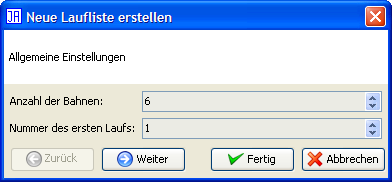
Schritt 1: Allgemeine Einstellungen
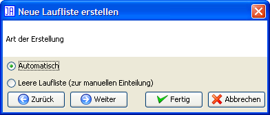
Schritt 2: Laufliste erstellen oder nur eine leere anlegen?

Schritt 3: Benutzbare Bahnen wählen

Schritt 4: Reihenfolge der Disziplinen wählen
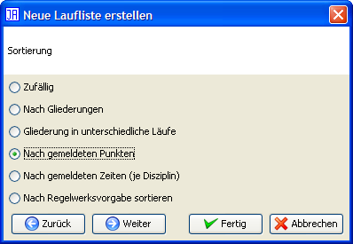
Schritt 5: Sortierung festlegen
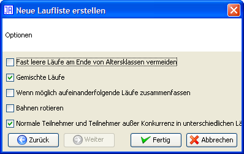
Schritt 6: Weitere Optionen
Über den Unterpunkt "Bearbeiten" wird die aktuelle Liste angezeigt. Wurden seit der Erstellung der Liste weitere Teilnehmer oder Mannschaften eingetragen, erscheinen diese im rechten Teil - der sogenannten "Warteliste". Den Hauptteil des Fensters nimmt die eigentliche Liste ein, die in Tabellenform dargestellt ist. Die erste Spalte ist mit "#" beschriftet und enthält die Laufnummer. Die Spalten "AK" und "Disziplin" enthalten den Namen der entsprechenden Altersklasse bzw. der geschwommenen Disziplin. Dabei gilt für die Altersklasse, dass hier der Name der Altersklasse inklusive Geschlecht angezeigt wird. Starten die Schwimmer einer Altersklasse in einem Lauf gemischt, so steht hier der Name der Altersklasse gefolgt von "gemischt". Starten in einem Lauf unterschiedliche Altersklassen steht hier nur "Gemischt". Entsprechend gilt dies für die Spalte "Disziplin", sobald unterschiedliche Disziplinen geschwommen werden, steht hier "Gemischt". Die restlichen Spalten stehen für die Nummer der Bahn und dort sind die entsprechenden Teilnehmer bzw. Mannschaften eingetragen.

Laufliste

Laufliste: Rechtsklick

Menü
Durch einen einfachen Klick auf einen Teilnehmer werden dessen Informationen am unteren Fensterrand dargestellt. Durch einen Doppelklick auf einen Schwimmer in der Liste wird er auf die Warteliste gesetzt und aus der Liste entfernt. Durch einen Doppelklick auf ein leeres Feld der Liste wird der ausgewählte Teilnehmer der Warteliste in die Liste eingetragen und aus der Warteliste entfernt. Sie können die Listen wahlweise auch mittels Drag'n'Drop verändern. Ziehen Sie hierzu den Teilnehmer bzw. die Mannschaft einfach an die gewünschte Stelle. Durch einen rechten Mausklick auf ein Feld in der Laufliste öffnet sich ein Kontextmenü. Wenn Sie auf einen Schwimmer geklickt haben, können Sie diesen über den Punkt "Entfernen" aus der Laufliste entfernen. Über die restlichen Menüpunkte können Sie einen Lauf oberhalb bzw. unterhalb des aktuellen Laufs einfügen oder den aktuellen Lauf löschen.
Über den Unterpunkt "Anzeigen" kann die aktuelle Lauf- bzw. HLW-Liste angezeigt werden. Der Aufbau des Fensters entspricht dem bei der Bearbeitung; es fehlt lediglich die Warteliste und eine Bearbeitung ist nicht möglich. So können Sie sicherstellen, dass Sie nicht versehentlich die Laufliste modifizieren.
Über den Unterpunkt "Sperren" kann die Bearbeitung und die Neuerstellung unterbunden werden. Damit ist eine versehentliche Änderung der Listen nicht möglich.
Über diesen Menüpunkt können Lauflisten erstellt und verwaltet werden. Dazu stehen Ihnen die folgenden Funktionen zur Verfügung:

Schritt 1: Anzahl der HLW-Puppen
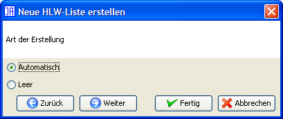
Schritt 2: Erstellung oder Vorbereitung
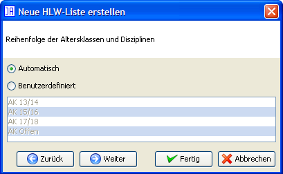
Schritt 3: Reihenfolge der Altersklassen
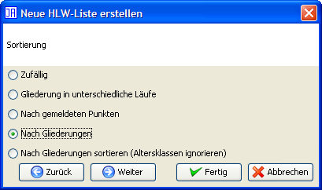
Schritt 4: Sortierung der Teilnehmer

Schritt 5: Meldepunkte

Schritt 6: Uhrzeit
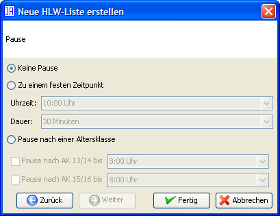
Schritt 7: Pause
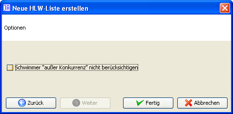
Schritt 8: Optionen
Die Erstellung einer HLW-Liste wird über "Neu" durchgeführt. Dabei geben Sie zuerst die Anzahl der HLW-Puppen an. Im zweiten Schritt können Sie auswählen, ob Sie die HLW-Liste von Hand erstellen möchten (Dann ist die Erstellung nach diesem Schritt abgeschlossen), oder ob Sie die Liste von JAuswertung erstellen lassen wollen. Im dritten Schritt legen Sie die Reihenfolge der Altersklassen fest. Der vierte Schritt gibt die Reihenfolge der Teilnehmer bzw. Mannschaften innerhalb einer Alterklasse an. Im fünften Schritt legen Sie die Anfangsuhrzeit der HLW sowie die Dauer einer HLW fest. Im letzten Schritt können Sie noch Pause bei der HLW einplanen. Diese können Sie wahlweise zu einem festen Zeitpunkt oder nach jeder Altersklasse angeben.
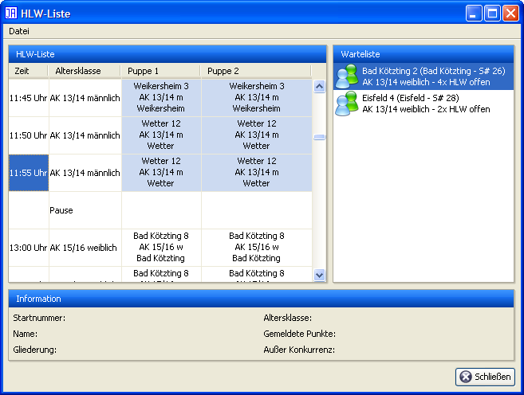
HLW-Liste
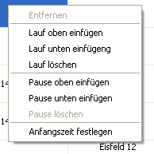
HLW-Liste: Rechtsklick
Sie können bestehende HLW-Listen bearbeiten, so dass Sie auch automatisch erstellte Listen Ihren Wünschen anpassen und nachgemeldete Starter einfügen können. Dabei sehen Sie in dem Fenster links die aktuelle HLW-Liste und rechts in der "Warteliste" die Starter, die noch zur HLW eingeteilt werden müssen. Die Tabelle der HLW-Liste enthält dabei die Spalten "Zeit" für den Zeitpunkt an dem die HLW durchzuführen ist sowie die Altersklasse der Starter. Gehen gemischte Geschlechter zu einer Zeit an der Start steht hier z.B. "AK 13/14 gemischt". Starten unterschiedliche Altersklassen zum gleichen Zeitpunkte so steht in dieser Spalte "Gemischt". Die restlichen Spalten stehen für die Nummer der Bahn bzw. HLW-Puppe und dort sind die entsprechenden Teilnehmer bzw. Mannschaften eingetragen. Eine Besonderheit stellt hier die Mannschafts-HLW dar, da hier jede Mannschaft viermal antreten muss. Einzelne Teilnehmer bzw. Mannschaften können Sie per Drag'n'Drop verschieben und so an die gewünschte Position bringen. Pausen und Läufe können Sie über einen Rechtsklick-Menü hinzufügen bzw. entfernen.
Die Funktion "Anzeigen" bietet ausschließlich die Anzeige der HLW-Liste ohne die Bearbeitungsfunktionen. Über den Punkte "Sperren" können Sie die HLW-Liste vor Bearbeitungen schützen. So kann diese nicht versehentlich geändert werden.
Die Laufpräsentation dient zur Darstellung der Informationen über den aktuellen sowie dem nächsten Lauf z.B. über einen Videobeamer. Die Anzeige wechselt zeitgesteuert zwischen der aktuellen Laufnummer und dem nächsten Lauf.
Folgende Tasten können zum Wechsel zum nächsten Lauf genutzt werden: Pfeil rechts, Pfeil unten, Leertaste, Enter
Folgende Tasten können zum Wechsel zum vorherigen Lauf genutzt werden: Pfeil links, Pfeil oben, Backspace.
Über diesen Menüpunkt können Sie die Altersklassen ihres Wettkampfs bearbeiten. Beachten Sie aber, dass Sie während eines Wettkampfs keine Altersklassen erstellen bzw. löschen können, und dass die Anzahl der Disziplinen nicht geändert werden kann. Darüber hinaus können Sie weitere Einstellungen zum Regelwerk durchführen. Weitere Informationen zum Regelwerkseditor finden Sie im Kapitel Regelwerkseditor.

Kampfrichtervorgabe wählen
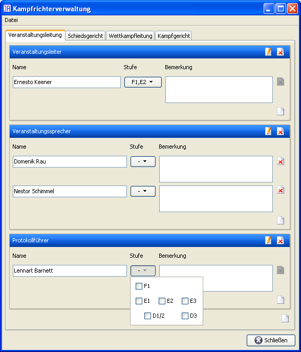
Kampfrichterverwaltung
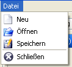
Menü
Mit der Kampfrichterverwaltung können Kampfrichter auf die verschiedenen Positionen eingeteilt werden. Die Positionen entsprechen denen des aktuellen DLRG-Regelwerks. Sie können je nach Wettkampf die Anforderungen an die Kampfrichter festlegen. So gelten z.B. für Bezirksmeisterschaften geringere Anforderungen als für die Landesmeisterschaften. Die Einteilung der Kampfrichter kann einzeln gedruckt werden, ist aber auch Bestandteil des Protokolls.
Tipp: Sie können die Einteilung der Kampfrichter auch speichern und in einem anderen Wettkampf laden. Damit müssen Sie die Kampfrichter nicht zweimal eintippen, wenn sich die Kampfrichter z.B. zwischen Einzel- und Mannschaftsmeisterschaften nicht ändern.
Über diesen Menüpunkt können Sie festlgen welche Schwimmer einer Startpasskontrolle unterzogen werden sollen. Dabei steht Ihnen ein Assistent zur Verfügung, der Sie bei der Auslosung der Startunterlagenkontrolle unterstützt, so dass Sie die Auswahl nicht manuell vornehmen müssen. Diese Auswahl können Sie aber bei Bedarf jeder Zeit Ihren Wünschen anpassen.

Startunterlagenkontrolle
Menü

Assistent
Die Auslosung der Dopingkontrolle ist identisch zur Startpasskontrolle.
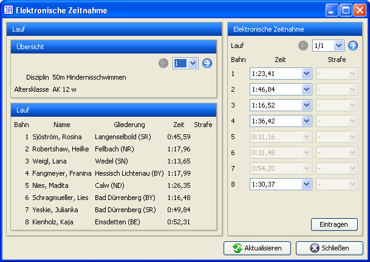
Elektronische Zeitnahme
Die Funktion "Elektronische Zeitnahme" wurde für die "Deutschen Meisterschaften im Rettungsswimmen" hinzugefügt und ermöglicht die Übernahme von Zeiten aus einer elektronischen Zeitmessanlage. Wenn JAuswertung mit einer Zeitmessanlage verbunden ist, kann über den Knopf "Aktualisieren" das aktuelle Ergebnis abgerufen werden. Im Bereich Übersicht kann aus den Läufen von JAuswertung ausgewählt werden. JAuswertung versucht dabei den passenden Lauf der elektronischen Zeitmessung im rechten Bereich zu ermitteln und anzuzeigen. Mit dem Knopf "Eintragen" werden die Zeiten aus der elektronischen Zeitmessung übernommen.
Die Verbindung mit einer elektronischen Zeitnahme erfolgt über ein Netzwerk. Die benötigten Einstellungen stehen im Menüpunkt Extras → Optionen zur Verfügung.
Hinweis: Ggf. stellt die Zeitnahme mehrere Zeiten pro Bahn zur Verfügung. Aus diesen kann die gewünschte Zeit ausgewählt werden.
Der Zielrichterentscheid ist eine Besonderheit, die mit dem DLRG-Regelwerk von 2008 aus dem DSV-Regelwerk übernommen wurde. Diese tritt dann ein, wenn in einem Lauf bei mehreren Schwimmer der gleichen Altersklasse die manuell gestoppte Zeit dem Zieleinlauf widerspricht (Bei vollautomatischer Zeitnahme tritt ein Zielrichterentscheid also nicht ein). In diesem Fall erhalten alle Schwimmer die gleiche Zeit. Die Platzierung in dieser Disziplin wird entsprechend dem Zieleinlauf festgelegt, so dass die Schwimmer trotz gleicher Zeit unterschiedliche Plätze einnehmen. Dies gilt jedoch nur, wenn nicht in einem anderen Lauf ein weiterer Schwimmer der gleichen Altersklasse die gleiche Zeit geschwommen hat.
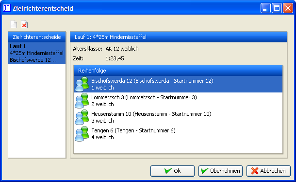
Zielrichterentscheid
JAuswertung geht davon aus, dass die im Falle eine Zielrichterentscheids betroffenen Schwimmer die gleiche Zeit erhalten und entsprechend eingegeben werden. Wenn Sie also einen Zielrichterentscheid hinzufügen möchten, listet Ihnen JAuswertung die in Frage kommenden Läufe mit den entsprechenden Teilnehmern auf. Aus dieser Liste können Sie anschließend den richtigen auswählen.
Anmerkung: Sollte Ihr Zielrichterentscheid nicht aufgeführt werden, so liegt wahrscheinlich ein Eingabefehler vor.
In der Liste der aufgeführten ausgewählten Zielrichterentscheide werden die Schwimmer zuerst anhand ihrer Bahnen sortiert aufgelistet. Sie können die Reihenfolge der Schwimmer per Drag'n'Drop ändern.
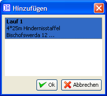
Zielrichterentscheid hinzufügen
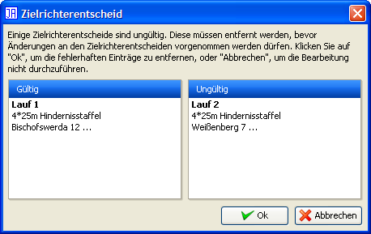
Zielrichterentscheide korrigieren
Die Strafenliste zeigt alle vergebenen Strafen des aktuellen Wettkampfs nach Läufen sortiert an. Hier haben Sie die Möglichkeit, diese noch einmal auf Richtigkeit zu überprüfen und ggf. zu korrigieren.
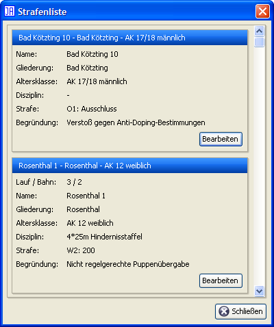
Strafenliste
Tipp: Da mit dem Regelwerk 2007 Strafen nicht mehr durchgesagt werden müssen, kann es sinnvoll sein, die Strafen noch einmal einzeln auszuhängen. Zu diesem Zweck können Sie die Strafenliste im Druckbereich ausdrucken.
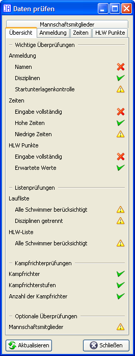
Daten prüfen: Übersicht
Über diesem Menüpunkt öffnen Sie ein Fenster, dass ihnen Informationen zum aktuellen Stand der Eingabe darstellt. Sie ershalten eine Übersicht über fehlerhafte bzw. korrekte Einfaben. Dabei müssen Sie jedoch beachten, dass diese Angaben auf Erfahrungswerten basieren und in vielen Fällen auf Fehler in der Eingabe hinweisen. Es wird damit nicht garantiert, dass bestimmte Eingaben mit absoluter Sicherheit richtig oder falsch sind. Es ist aber i.d.R. gut, sich markierte Punkte genauer anzusehen.
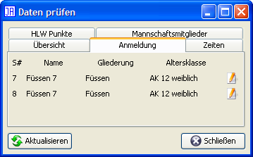
Daten prüfen: Anmeldung
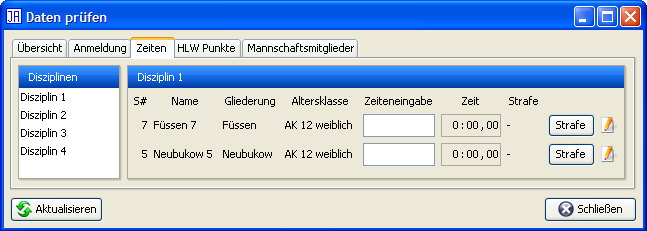
Daten prüfen: Zeiten
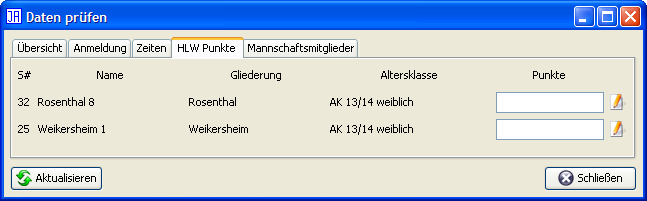
Daten prüfen: HLW Punkte
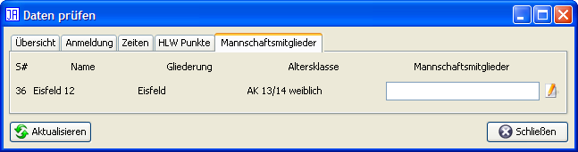
Daten prüfen: Mannschaftsmitglieder
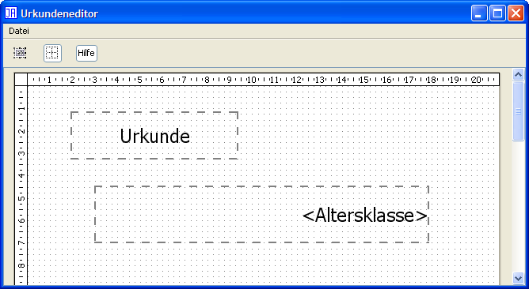
Urkundeneditor
Mit dem Urkundeneditor können Sie bestehende Urkunde bedrucken lassen, so dass Sie diese nicht von Hand ausfüllen müssen. Dazu können Sie einzelne Textfelder erstellen, ausrichten und deren Schriftart ändern. Über das normale Druckmenü können dann die Urkunden auch Altersklassenweise gedruckt werden.
Folgende Texte in den Textfeldern werden automatisch ersetzt:
<Name>
<Gliederung>
<Altersklasse>
<Geschlecht>
<Punkte>
<Platz>
<Wertung>
<Mitglieder>
<Mitglieder2>
Beachten Sie bitte die < und > um jedes Wort. Der Satz "<Name> belegte in der Altersklasse <Altersklasse> <Geschlecht> den <Platz>. Platz" würde also z.B. auf der gedruckten Urkunde wie folgt aussehen "Musterstadt 1 belegte in der Altersklasse AK 12 weiblich den 3. Platz". Die Texte <Mitglieder> und <Mitglieder2> werden bei Mannschaftswettkämpfen durch die Mannschaftsmitglieder ersetzt. <Mitglieder> erstellt dabei eine kommagetrennte Liste, <Mitglieder2> schreibt jedes Mitglied in eine eigene Zeile. Durch <Wertung> wird bei der Disziplinenwertung der Name der Disziplin eingesetzt; bei der Mehrkampfwertung wird hier "Mehrkampf" eingetragen.
Über diesen Menüpunkt gelangen Sie in die Verwaltung der Ausgabefilter. Ausgabefilter ermöglichen es mehrere Wettkämpfe in Einem zu verwalten und trotzdem getrennte Ergebnisse, Protokolle und Meldelisten drucken und exportieren zu können. Auf der linken Seite des Fensters sehen Sie die zur Zeit eingerichteten Filter. Hier können Sie einzelne Filter hinzugefügen bzw. entfernen. Beachten Sie, dass der Standardfilter weder entfernt noch geändert werden kann. Er enthält immer alle Teilnehmer bzw. Mannschaften. Auf der rechten Seite sehen Sie den zur Zeit ausgewählten Ausgabefilter. Hier können Sie den Namen des Filters ändern, wobei leere Namen nicht erlaubt sind. Unter dem Namen finden Sie eine Liste der Gliederungen, die zu diesem Filter gehören. Mit den beiden darunterliegenden Knöpfen können Sie weitere Gliederungen zu diesem Filter hinzufügen bzw. entfernen.
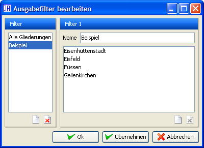
Ausgabefilter
Das Menü "Extras" enthält die Menüpunkte Strafenkatalog und Optionen.
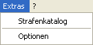
Menü: Extras
Der Strafenkatalog enthält eine Liste aller Strafen des Regelwerks, die in Kapitel und Paragraphen unterteilt sind. Werden während eines Wettkampfs Strafen vergeben und ein eigener Text eingetragen, werden diese "neuen" Strafen im Kapitel "Sonstiges" aufgeführt. Dies ist sinnvoll, da im Regelwerk z.B. Strafen für fehlerhafte Wechsel vorgesehen sind. Während eines Wettkampfs ist aber auch der Vermerk "beim Wechsel vom 3. auf den 4. Schwimmer" sinnvoll. Wurde dies bei einer Strafe einmal eingetragen, kann diese beim nächsten Auftreten direkt ausgewählt werden.

Strafenkatalog
Zur Unterstützung ist jeder Strafe ein Symbol zugeordnet:
Grüner Haken: Keine Strafe (0 Strafpunkte)
Blitz in gelbem Kreis: Strafpunkte
Roter Kreis mit weißem X: Disqualifikation
Fußspuren: Nicht angetreten
Haus: Ausschluss
Anmerkung: Die Regelwerke für Mannschaftswettkämpfe enthalten erweiterte Fehlercodes. Dabei wird neben der Strafe auch die Nummer des Verursachers bzw. des Wechsels angegeben. Z.B. kann für falsches Schleppen einer Puppe P2-3 gewählt werden, so dass direkt ablesbar ist, dass der dritte Schwimmer die Strafe P2 verursacht hat. Diese Erweiterung ist jedoch im Regelwerk so nicht vorgesehen.
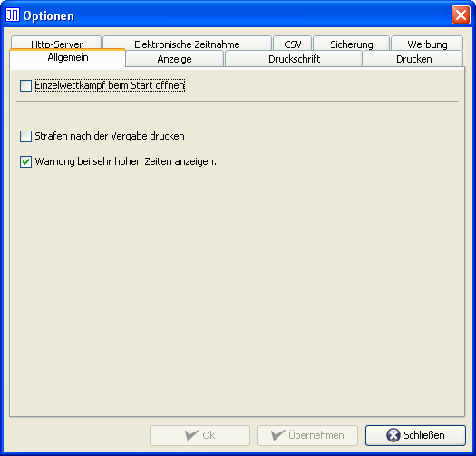
Optionen
Über den Menüpunkt "Optionen" können Sie ein Fenster öffnen, in dem sich weitere Einstellungen vornehmen lassen. Das Fenster enthält die Registerkarten "Allgemein", "Anzeige", "HTTP-Server", "Sicherung", "CSV", "Drucken", "Druckschrift", "Elektronische Zeitnahme" und "Werbung".
Über "Allgemein" können Sie einstellen, welche Art von Wettkampf also ein Einzel- bzw. Mannschaftswettkampf nach aktuellem Regelwerk beim Start erstellt werden soll. Die zweite Option legt fest, ob die Oberfläche "geteilt" sein soll. Geteilt ist die Standardeinstellung und bedeutet, dass Sie die Ergebnisse jederzeit im unteren Bereich des Fensters sehen können. Sollten Sie jedoch eine niedrige Auflösung oder größere Schriftarten nutzen, kann es sein, dass der Platz auf dem Bildschirm zu eng wird. Schalten Sie dann die geteilte Oberfläche aus, und die Ergebnisse erreichen Sie ab dem nächsten Start von JAuswertung über ein Icon an der linken Seite. Die dritte Einstellungsmöglichkeit betrifft das Drucken von Strafpunkten, wenn Sie diese Option aktivieren, wird automatisch bei jeder vergebenen Strafe ein Strafenlaufzettel mit allen nötigen Daten gedruckt. Dies ist vor allem bei Freundschaftswettkämpfen sinnvoll, wenn der Protokollführer mehrere Funktionen im Kampfgericht erfüllt. Die letzte Option betrifft die Warnung bei der Eingabe von sehr hohen Zeiten. Da im Normalfall nur Zeiten geschwommen werden, die nicht höher sind als 5 * Rec-Wert der aktuellen Disziplin, handelt es sich hier meistens um Tippfehler. Diese können so vermieden werden.
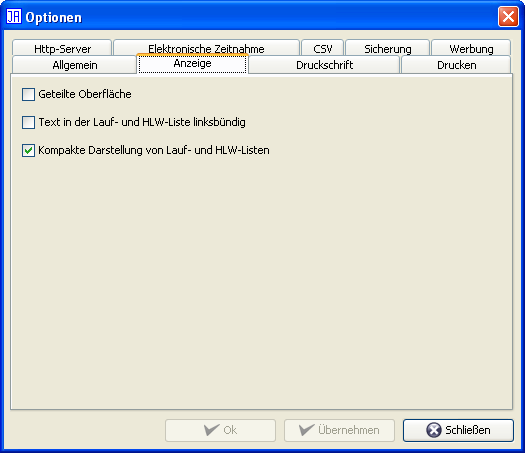
Anzeige
Im Bereich "Anzeige" kann die geteilte Ansicht gewählt werden. Dabei wird das Fenster in einen oberen und einen unteren Bereich unterteilt. Der obere enthält die Eingabefunktionen und der untere die Punkte Ergebniss und Drucken. Dies ist jedoch nur bei hohen Auflösungen sinnvoll. Daher wird bei niedrigen Auflösungen die geteilte Oberfläche nicht automatisch gewählt. Für diese Einstellung muss JAuswertung neu gestartet werden. Der zweite Punkt beeinflusst die Ausrichtunge von Texten in Lauf- und HLW-Listen. Mit dem dritten Punkt kann JAuswertung mitgeteilt werden, dass nach Möglichkeit redundante Informationen vermieden werden, um Platz auf den Ausdrucken zu sparen.
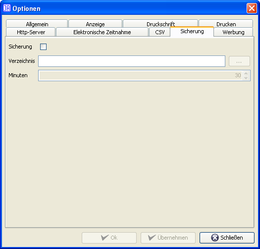
Sicherung
Über den Bereich "Sicherung" können Sie eine automatische Sicherung anlegen lassen. Diese unterscheidet sich von der Funktion "Datei" → "Automatisch speichern" dadurch, dass den Dateinamen die aktuelle Uhrzeit hinzugefügt wird. Dadurch existieren Backups mit denen die einzelnen Änderungen im Wettkampf nachvollzogen werden können.
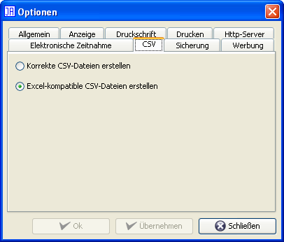
CSV
Über die Registerkarte "CSV" können Einstellungen zum CSV-Export und -Import vorgenommen werden. Diese beziehen sich auf die Trennzeichen, die beim CSV-Export/-Import berücksichtigt werden. In normalen CSV-Dateien werden "," als Trennzeichen benutzt. Microsoft Excel nutzt aber die aktuellen Spracheinstellungen zum Export und Import. Dadurch werden Zahlen mit "," getrennt z.B. "123,4" und das Trennzeichen ";" genutzt. Je nachdem mit welchen Programmen Sie arbeiten, müssen Sie diese Option entsprechend wählen.
Anmerkung: Auf Windows-Systemen wird automatisch die zu Excel kompatible Version gewählt. Auf allen anderen Systemen die korrekte CSV-Darstellung.
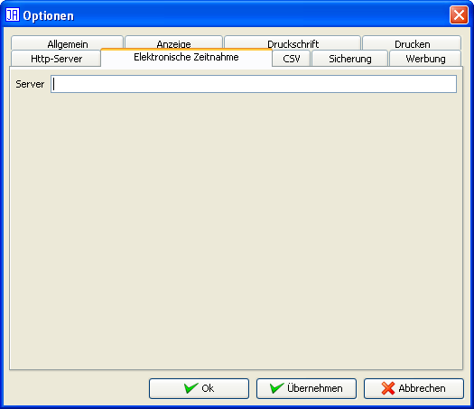
Elektronische Zeitnahme
Die Verbindung von JAuswertung mit einer elektronischen Zeitmessanlage erfolgt über ein einfaches Netzwerkprotokoll. Für die Zeitmessanlage "Ares 21" von "OMEGA Watches" steht eine Implementierung Namens "AlphaServer" zur Verfügung. Als Server müssen Sie die Adresse des Rechners angeben, auf dem die Software läuft.
Hinweis: Die Software "AlphaServer" ist ebenfalls OpenSource und damit kostenlos. Die grafische Benutzeroberfläche ist jedoch noch nicht offiziell freigegeben. Genauere Informationen zu dieser Software können unter info@dennismueller.de nachgefragt werden.
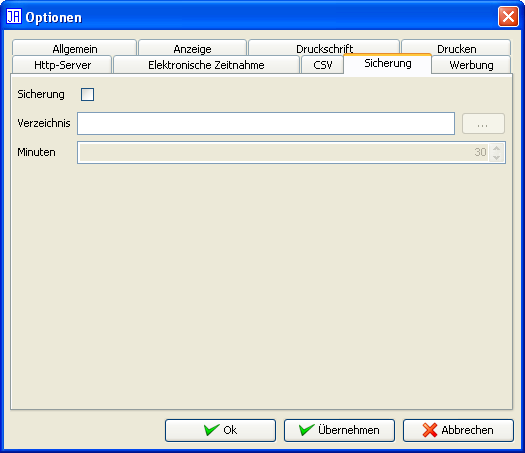
Werbung
JAuswertung unterstützt das Einblenden von Werbebannern unter- bzw. oberhalb verschiedener Ausdrucke. Diese Einstellung wirkt sich nur auf Ausdrucke aus, die im Allgemeinen vor einem Wettkampf verschickt bzw. während eines Wettkampfs ausgehängt werden. Ergebnisse können so z.B. den Logos von Sponsoren versehen werden.
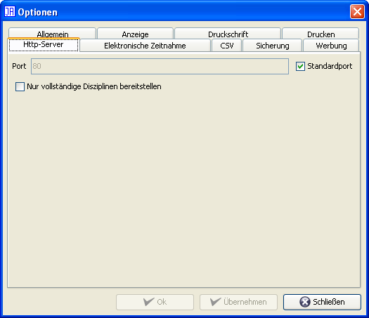
HTTP-Server
Über die Registerkarte "HTTP-Server" können Sie den integrierten HTTP-Server von JAuswertung einstellen. Zur Zeit können Sie den Port für den HTTP-Server ändern. Normalerweise sollten Sie den Standardport nutzen. Unter Linux kann es notwendig sein, den Port auf einen Wert über 1024 zu ändern, da die unteren Ports für Benutzer gesperrt sind. Beachten Sie aber, dass sich damit der Aufruf in ihrem Browser ändert. Der HTTP-Server kann normalerweise von ihrem Rechner aus über die URL "http:localhost/index.html" angesprochen werden. Wenn Sie den Port auf z.B. 8080 ändern, sieht die URL wie folgt aus: "http:localhost:8080/index.html". Den Port für den HTTP-Server können Sie nur ändern, wenn der HTTP-Server nicht gestartet ist.
Hinweis: Der eigentliche Start des HTTP-Servers erfolgt über die Weltkugel in der oberen Knopfleiste. Mit dem HTTP-Server können Sie, wenn Sie mehrere Rechner vernetzen, direkt auf die Daten von JAuswertung zugreifen, ohne den Auswerter stören zu müssen. Beachten Sie aber, dass jede Anfrage Rechenzeit benötigt und den Rechner des Auswerters damit zusätzlich belastet. Dies gilt vor allem für den Download von PDF-Dateien. Sie sollten den HTTP-Server nur intern nutzen, da er nicht darauf ausgelegt ist, große Mengen an Daten/Anfragen zu bewältigen.

Druckschrift
Über die Registerkarte "Druckschrift" können Sie die Schriftart für Ausdrucke auswählen. Standardmäßig wird die Schriftart "DLRG Univers 55 Roman" gewählt, sofern Sie vorhanden ist.

Drucken
Über die Registerkarte "Drucken" können Sie die Orientierung der Ergebnisse im Protokoll einstellen. Standardmäßig werden die Ergebnisse um 90 Grad gedreht gedruckt. Wird also das Protokoll im Hochformat gedruckt, erscheinen die Ergebnisse im Querformat. Bei dieser Einstellung werden die Ergebnisse in den meisten Fällen am besten gedruckt. Wenn Sie die Ergebnisse im Hochformat erhalten wollen, so müssen Sie die Option "Ergebnisse waagrecht drucken" aktivieren.
Sie können festlegen, ob beim Druck von Lauflisten leeren Bahnen mitgedruckt werden ("Leere Bahnen drucken"). Zusätzlich können Sie festlegen, ob beim Druck von Startkarten auch für in einem Lauf nicht genutzte Bahnen Startkarten gedruckt werden sollen.
Bei der Disziplinenwertung ist es Geschacksache, ob die Punkte mitgedruckt werden sollen oder nicht ("Punkte bei der Disziplinenwertung drucken"). Zur einfacheren Unterscheidung von Ergebnissen unterstützt JAuswertung Checksummen, mit denen festgestellt werden kann, ob zwei Ergebnisse unterschiedlich sind. Diese Checksummen können auf jedes Ergebnis gedruckt werden ("Checksummen in Ergebnissen drucken"). Sind die Checksummen unterschiedlich, so sind auch die Ergebnisse unterschiedlich. Wenn die Checksummen gleich sind, ist die Wahrscheinlichkeit sehr hoch, dass die Ergebnisse gleich sind. In seltenen Fällen kann es jedoch vorkommen, dass zwei Ergebnisse mit gleichen Checksummen unterschiedlich sind. Mit der Option "Nicht angetreten in der Strafenliste drucken" kann festgelegt werden, ob in Ausdrucken der Strafenliste auch "nicht angetretene" Schwimmer berücksichtigt werden. "Platzierungen in Ergebnissen drucken" ermöglicht es zu wählen, ob die Platzierungen in den einzelnen Disziplinen bei der Mehrkampfwertung mitgedruckt werden.
Mit der Option "Namen der Mannschaftsmitglieder in der HLW-Liste drucken" besteht die Möglichkeit zu wählen, ob die Namen der ersten vier Mannschaftsmitglieder in die HLW-Liste gedruckt werden sollen.
Die Stärke von Grautönen ist stark vom eingesetzten Drucker und den Einstellungen im Treiber abhängig. Daher kann die Intensität des Grautons für die Zeilenmarkierung in Tabellen manuell festgelegt werden. Dies geschiet über den Regler unter "Helligkeit der hervorgehobenen Zeilen".
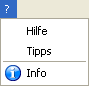
Menü: ?
Dieses Menü bietet Informationen zu JAuswertung. Der Punkt "Hilfe" führt zu dieser Anleitung, der Punkt "Tipps" zeigt ausgewählte Hilfen an und der Punkt "Info", stellt einige Informationen zu JAuswertung dar.
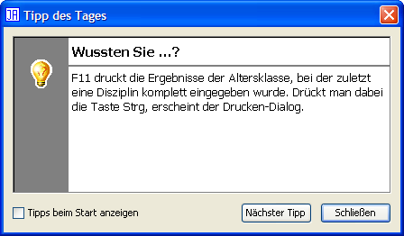
Tipps des Tages
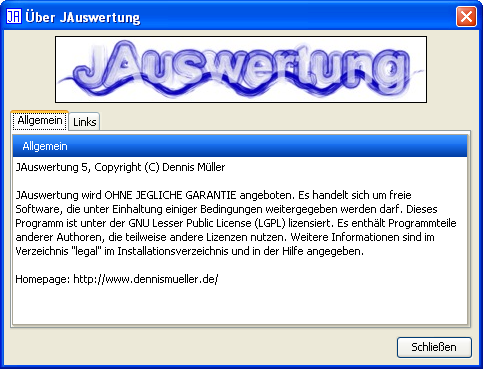
Über JAuswertung